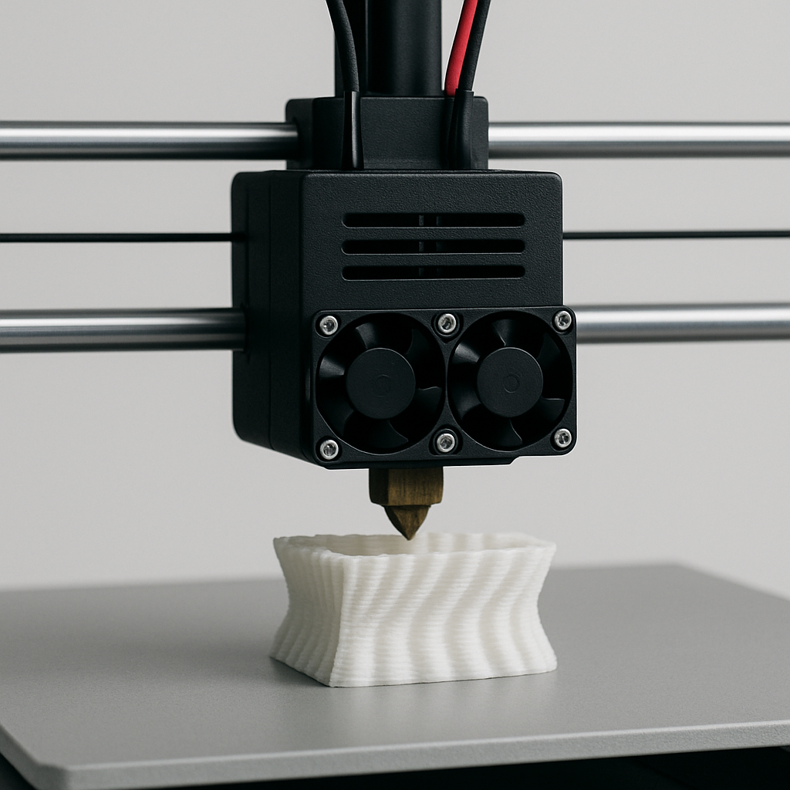

Ideia do projeto
A impressão 3D tem vindo a ganhar destaque em diversas áreas, desde o prototipagem rápida até à produção de peças finais. Com o avanço da tecnologia, impressoras como a Creality K1 tornaram-se acessíveis e relativamente fáceis de montar e utilizar. Este trabalho tem como objetivo documentar o processo de montagem e os testes realizados numa impressora 3D Creality K1, destacando os passos principais, as configurações iniciais e a verificação do seu funcionamento. Através desta abordagem prática, pretende-se garantir que o equipamento está corretamente preparado para produzir impressões com qualidade e consistência.